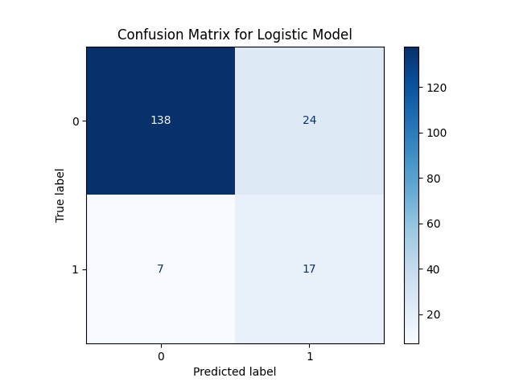
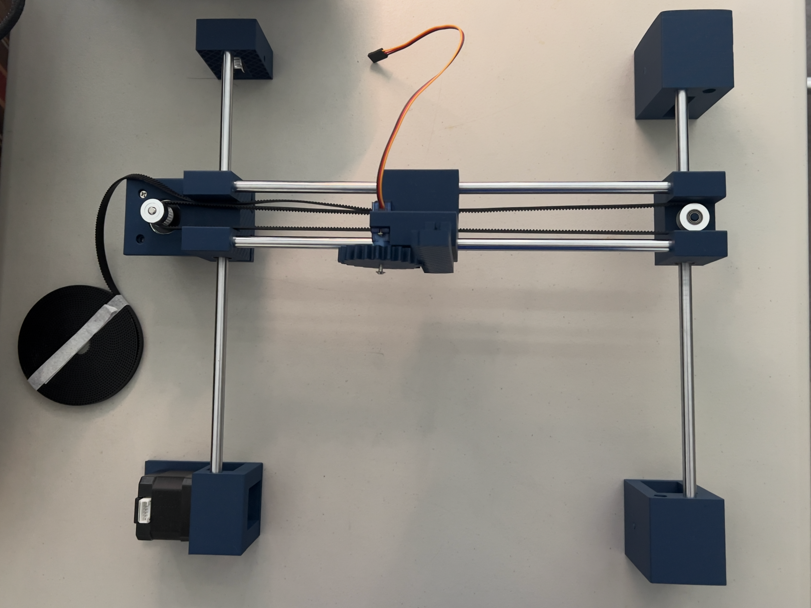

Projects
A showcase of my most significant work in hardware engineering, machine learning, and software development. Each project represents hands-on learning, problem-solving, and a passion for innovation as a result of extensive iteration, development, and smaller-scale projects and ideas.
Mechanical Keyboard
- Developed an 80% mechanical keyboard with KiCad and a custom case using Fusion 360 and Bambu Studio.
- Programmed an RP2040 Pro Micro to support QMK firmware and VIA compatibility for custom keymaps.
- Learned how to solder, utilize a keyboard matrix, and design a functional PCB.
Detecting Myopia with LR and CNN Models
- Developed a Logistic Regression model and visualized an 83.33% accuracy with a Confusion Matrix
- Trained a CNN on 1,000 labelled eye images using TensorFlow and Keras and achieved an 87.35% accuracy.
- Calculated Precision, Recall, and F1 Scores using Scikit-Learn to measure better model performances.
- Created a multi-layered model using data augmentation, Conv2D, BatchNormalization, MaxPooling2D, and Dropout layers.

Arduino Robotic Arm
- Created a four-jointed robotic arm capable of grabbing small and lightweight objects.
- Modeled and 3D printed a custom base, joints, and claw grabber that houses all the electronics.
- Controlled servos using potentiometers and analog signals using the Arduino IDE.
- Learned about analog and PWM signals, mapped analog input values to servo angles, and managed power requirements for multiple servos.

Endless Fish Swimmer
- Arcade style minigame where you control a fish and avoid obstacles.
- Incorporates live camera control with OpenCV and MediaPipe landmarks.
- Includes score tracking, animations, high score saving, and a home screen.
Works in Progress
A preview of projects that I'm currently working on.
Cartesian Pen Plotter
- Designing a DIY pen plotter inspired by my fascination of 3D printers.
- Uses Nema-17 stepper motors, A4988 stepper drivers, a micro servo, and ESP32.
- Utilizes four 300mm linear rods, linear bearings, GT2 timing belts, and GT2 pulleys.
- Implements a rack & pinion pen mechanism for Z-axis control.
- Currently finalizing pen carriage and starting on GCode instructions in communication with ESP32.
